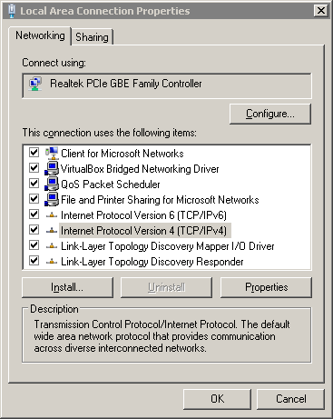
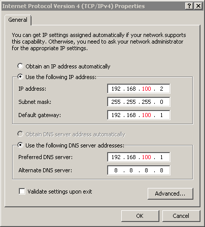

Networking
Private-LAN-setup Worksheet
Configure Your Own LAN Segment
In this worksheet you will reconfigure your Virtual Machines to form a private Local Area Network.You have added your VMs as private nodes on your physical host. Now you'll move them to your own Local Area Network (LAN) segment, which will be named "intnet".
Change Network Adapters
Do this for both your Windows VM and your Linux VM.- Select one of your VMs in the VM manager, and click on the "Settings" icon.
- Choose the "Network" item in the dialog box.
-
You should see a tab labeled "Adapter 1" that is enabled, and attached to "NATNetwork".
Click on the drop-down box for this and select "Internal Network" instead. The network's name should come up as "intnet".
- Click on "OK".
- Repeat these steps for your other VM.
Windows VM
- Click on "Start". Login to Windows, using account "user" and password "user".
-
Click on "Start -> All Programs -> Accessories".
Right-click on "Command line" and choose "Run as Administrator".
Run the command
ipconfig. What is the IP address?(Does it start out 169.254... ? IP addresses that start out this way are so-called APIPA addresses; Windows chooses one arbitrarily when it has no other way of getting an IP address.)
If you run the command
ping 4.2.2.2now, you will get an "unreachable" result because you're not connected to the Internet. -
Select "Start-Button -> Control Panel -> Network and Internet".
Click on "View network status and tasks" under "Network and Sharing Center".
Click on "Change adapter settings" on the left.
- Right-click the Local Area Connection network. Choose "Properties".
- Find and select the line "Internet Protocol Version 4 (TCP/IPv4)". Then click on the Properties button. 
-
Fill in the blanks in the Properties dialog, as shown below.
In the following figure, replace the value "100" in each line with the last part of your physical host's IP address, e.g. 106, 119 or a similar number.
The IP address is 192.168.100.2
(For example, the instructor's Windows VM will be at 192.168.119.2);
The subnet mask is 255.255.255.0;
the Default gate and preferred DNS server are both 192.168.100.1;
Fill in the Alternate DNS server as 148.137.11.15 or leave it blank.  Check the box "Use the following IP address:". Fill in the IP address, subnet mask, Default gateway, and preferred DNS server, as shown in the figure.Click on "OK", then "Close".
-
Select "Start-Button -> Control Panel -> System and Security".
Choose "Windows Firewall".
Choose "Turn Windows Firewall on or off".
Turn off Windows Firewall for both private and public settings. This will let "pings" get through.
Choose "Allow a program or feature through Windows Firewall".
Check on "File and Printer Sharing". This should let "pings" get through.
Linux VM
Do either the Ubuntu steps or the Fedora steps, as appropriate.Ubuntu
In these steps, replace the value "x" with the last part of your physical host's IP address.- Start your Ubuntu VM. Login, using account "user" and password "user".
-
Click on the Start button in the lower left corner.
Choose "Service Settings" (the Gears icon), then choose "Network Connections".
- Choose "Manual wired connection", then click on "Edit"
- Choose the "IPv4 Settings" tab.
- Set the Method to "Manual".
-
Click on the "Add" button on the right.
Enter
192.168.x.3under the Address label.Enter
24under the Netmask label.Enter
192.168.x.1under the Gateway label. -
Enter
192.168.x.1in the "DNS servers:" box. - Click on the "Save..." button, then the "Close" button in the Network Connections window.
Fedora
In these steps, replace the value "x" with the last part of your physical host's IP address.- Start your Fedora VM. Login, using account "user" and password "user".
-
Click on "Activities" in the upper left.
Then choose the Applications icon at the bottom.
Choose "Settings".
-
Choose "Network".
Click on the "Settings" icon in the lower right corner.
-
Choose the "IPv4" item on the left.
On the right, set IPv4 to "ON", set Addresses to "Manual".
-
Fill in "Address" as
192.168.x.3.Fill in the "Netmask" as
24.Fill in the "Gateway" as
192.168.x.1. -
Fill in the DNS "Server" box as
192.168.x.1. - Click on "Apply", then close the Network window.